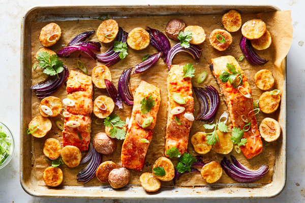

Sheet-Pan Harissa Salmon With Potatoes and Citrus

Description
In this 30-minute recipe, harissa, ginger and orange are combined to create a vibrant, spicy marinade for rich salmon fillets. The potatoes and red onion get a jump-start roasting, while the fish takes a quick dip in the marinade. Then the salmon is added to the sheet pan so everything finishes cooking together. This meal looks impressive right on the pan, so serve it from there and cut down on cleanup. You’ve got better things to do.
Ingredients
- 4 (6-ounce) skin-on salmon fillets, about 1- to 1½-inches thick
- Kosher salt and black pepper
- 2 to 3 tablespoons mild or spicy harissa paste, depending on your preference
- 2 teaspoons grated fresh ginger
- garlic clove, grated
- ½ teaspoon orange zest
- ¼ cup orange juice (from about ½ orange)
- 1 pound small potatoes, such as baby red or fingerlings, cut in half lengthwise
- 1 small red onion, peeled, quartered and cut into ½-inch wedges
- 2 tablespoons olive oil
- ¼ cup cilantro, roughly chopped, both leaves and tender stems
- 3 tablespoons scallions, thinly sliced on an angle, both white and green parts
- Flaky salt, for serving
Steps
- Heat oven to 450 degrees. Lay salmon on a plate, and season with salt and pepper. In a shallow bowl, whisk together harissa, ginger, garlic, orange zest and juice. Spoon the mixture over the flesh and sides of the fish, and let marinate at room temperature.
- Meanwhile, line a sheet pan with parchment paper (or use a nonstick sheet pan). In a large bowl, toss together the potatoes and onion with the olive oil, and season well with salt and pepper. Arrange them on the sheet pan in 1 layer, leaving 4 spaces for the salmon fillets to be added later. Roast until the potatoes are beginning to brown and are almost cooked through, about 20 minutes.
- Add the salmon to the sheet pan skin-side down, and roast until the fish is opaque and cooked through and the potatoes are crisp, about 8 minutes more. Scatter cilantro and scallions over everything, and season with flaky salt.